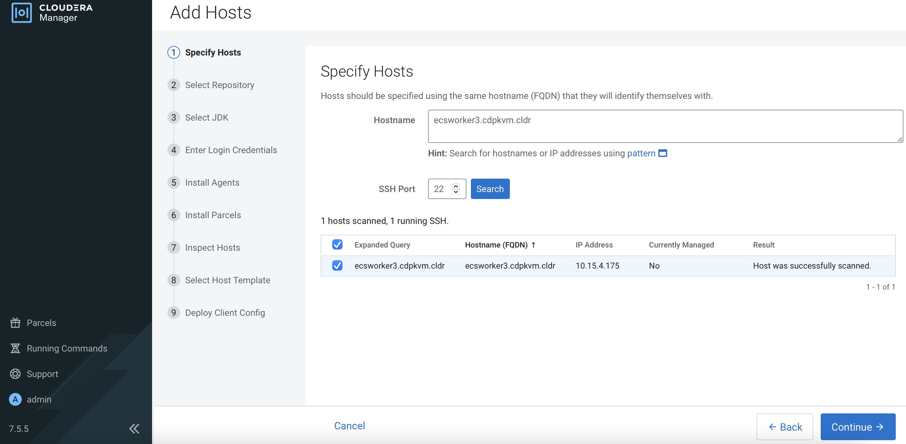
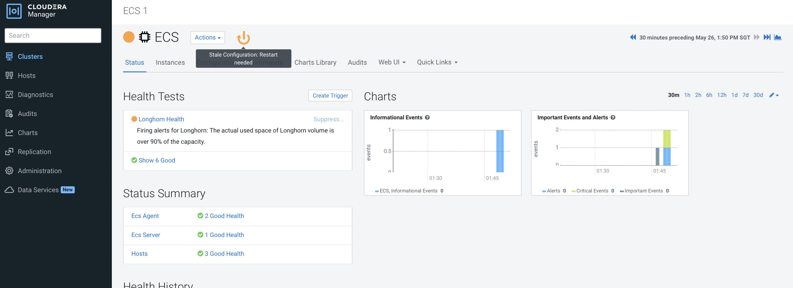

Add ECS Node
This article explains the steps to add a new ECS node (ecsworker3.cdpkvm.cldr) into the existing CDP PvC ECS cluster. Please note that this activity will need to restart the entire ECS cluster including the ECS master/server node. Service disruption is expected. This is only applicable to CDP Private Cloud solution installed with ECS system.
-
In CM, navigate to
Clusters>ECS>Storage UIto launch the Longhorn dashboard.
-
In Longhorn dashboard, take note that there is only 3 Longhorn nodes currently.

Check that the ECS cluster has 3 nodes currently.
# kubectl get nodes NAME STATUS ROLES AGE VERSION ecsmaster1.cdpkvm.cldr Ready control-plane,etcd,master 4d13h v1.21.8+rke2r2 ecsworker1.cdpkvm.cldr Ready <none> 4d13h v1.21.8+rke2r2 ecsworker2.cdpkvm.cldr Ready <none> 4d13h v1.21.8+rke2r2 -
In CM, navigate to
Clusters>ECS 1. Click3 Hoststo view the following page. ClickAdd Hosts.
-
Select
ECS 1cluster as follows. ClickContinue.
-
Enter the FQDN of the ECS node and click
Search. Upon successful scan, the hostname alongside each host’s IP address will appear. Check the details before clickingContinue.
-
Click
Continue.
-
Ensure that JDK has already been installed in the ECS host. Select
Manually manage JDKand clickContinue. -
Enter the login credentials. Click
Continue.
-
CM is installing the agent in the ECS node and will subsequently install the parcels.

-
Check the results if needed. Otherwise, click
Continue.
-
Click
Create....
-
Fill in the
Template Nameand select the role groups for this ECS worker/agent node.
-
Verify the details and click
Continue.
-
Upon successful deployment, click
Continue.
-
Click
Finish.
-
Note that the new ECS worker/agent node has been added successfully.

The ECS cluster is now updated with the new node.
# kubectl get nodes NAME STATUS ROLES AGE VERSION ecsmaster1.cdpkvm.cldr Ready control-plane,etcd,master 4d13h v1.21.8+rke2r2 ecsworker1.cdpkvm.cldr Ready <none> 4d13h v1.21.8+rke2r2 ecsworker2.cdpkvm.cldr Ready <none> 4d13h v1.21.8+rke2r2 ecsworker3.cdpkvm.cldr Ready <none> 111s v1.21.8+rke2r2 -
Navigate to
Clusters>ECS 1. Click the orange button to restart the ECS cluster.
-
Click
Restart Stale Services.
-
Select
Re-deploy client configurationand subsequently clickRestart Now.
This will restart the entire ECS cluster. During this process, the nodes will be reflected as
NotReady.# kubectl get nodes NAME STATUS ROLES AGE VERSION ecsmaster1.cdpkvm.cldr NotReady control-plane,etcd,master 4d13h v1.21.8+rke2r2 ecsworker1.cdpkvm.cldr NotReady <none> 4d13h v1.21.8+rke2r2 ecsworker2.cdpkvm.cldr NotReady <none> 4d13h v1.21.8+rke2r2 ecsworker3.cdpkvm.cldr NotReady <none> 11m v1.21.8+rke2r2 -
Upon successful restart, click
Continue.
-
The Longhorn dashboard now displays a total of 4 Longhorn nodes. This implies that the new ECS node has been added into the Longhorn cluster successfully.

All ECS nodes should be in
Readymode.# kubectl get nodes NAME STATUS ROLES AGE VERSION ecsmaster1.cdpkvm.cldr Ready control-plane,etcd,master 4d14h v1.21.8+rke2r2 ecsworker1.cdpkvm.cldr Ready <none> 4d13h v1.21.8+rke2r2 ecsworker2.cdpkvm.cldr Ready <none> 4d13h v1.21.8+rke2r2 ecsworker3.cdpkvm.cldr Ready <none> 14m v1.21.8+rke2r2 -
The storage is now currently empty for this newly added node.

-
In CM, ensure that new node is in green mode with the correct roles provisioned.

-
Create a new environment in the CDP Data Services Management Console. After successful creation of the environment, the system might choose this new node to provision the storage. If so, the longhorn dashboard will show that some space has been provisioned in this newly added node.
Verify that the system has provisioned some volumes at this new node in the
/longhorndirectory which was specified during the initial ECS cluster installation.# tree /longhorn /longhorn `-- ecs `-- longhorn-storage |-- longhorn-disk.cfg `-- replicas |-- pvc-40338fdb-c0dd-4e0d-a634-d3e8263a46e6-bbcad0e4 | |-- revision.counter | |-- volume-head-000.img | |-- volume-head-000.img.meta | `-- volume.meta |-- pvc-6709bacb-db5e-4129-8f9e-c645e07ad921-16dcd615 | |-- revision.counter | |-- volume-head-000.img | |-- volume-head-000.img.meta | `-- volume.meta |-- pvc-bc1e2346-d9d8-4ff6-be00-4105a6b8f433-ae9b50e3 | |-- revision.counter | |-- volume-head-000.img | |-- volume-head-000.img.meta | `-- volume.meta |-- pvc-cd6d226b-075a-475c-b5b3-9b79961bc338-8224c2de | |-- revision.counter | |-- volume-head-000.img | |-- volume-head-000.img.meta | `-- volume.meta `-- pvc-d37b564f-8d77-4cc0-b634-b85c0d1bca91-cf49bf98 |-- revision.counter |-- volume-head-000.img |-- volume-head-000.img.meta `-- volume.meta -
Create a new Impala database at the CDW console. The system might choose to provision the CDW pods and its persistent volume in this new node. If so, the direct attached local disk with the
localpathmountpoint will be provisioned with the impala cache file as shown below. Thelocalpathdirectory was configured during the initial ECS cluster installation.# tree /localpath/ /localpath/ `-- local-storage `-- pvc-a8c1086a-e7e3-4cf2-af02-da0a17ab146b_impala-1653548482-kwb7_scratch-cache-volume-impala-executor-000-0 |-- impala-cache-file-b94f4c649f4d8adc:5ac6c6fd6c847ba3 `-- impala-scratch 3 directories, 1 file